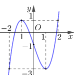
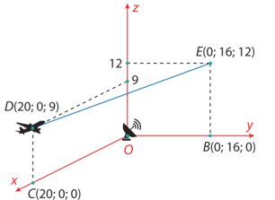
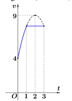
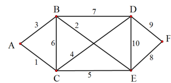
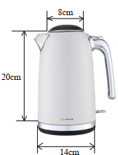
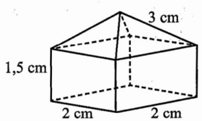
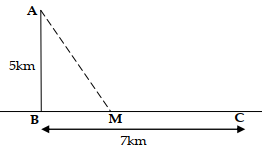

ĐỀ THI TOÁN - ĐỀ SỐ 10 HOT
Phần I: Trắc Nghiệm Nhiều Lựa Chọn
Tóm tắt kiến thức: Tính đơn điệu của hàm số
Hàm số \( f(x) \) đồng biến trên khoảng \( (a; b) \) nếu \( f'(x) \geq 0 \), nghịch biến nếu \( f'(x) \leq 0 \). Bảng xét dấu của \( f'(x) \) cho biết các khoảng đồng biến/nghịch biến.
Câu 1:
Cho hàm số \( y = f(x) \) có đạo hàm \( f'(x) = (x - 2)(x + 1), \forall x \in \mathbb{R} \). Mệnh đề nào dưới đây đúng?
Chọn đáp án:
Lời giải:
Ta có: \( f'(x) = (x - 2)(x + 1) = 0 \Leftrightarrow x = 2 \) hoặc \( x = -1 \).
Bảng xét dấu của \( f'(x) \):

Hàm số đồng biến trên các khoảng \( (-\infty; -1) \) và \( (2; +\infty) \), nghịch biến trên khoảng \( (-1; 2) \).
Đáp án: C.
Tóm tắt kiến thức: Giá trị nhỏ nhất của hàm số
Giá trị nhỏ nhất của hàm số trên đoạn \( [a; b] \) là giá trị nhỏ nhất trong các giá trị tại điểm đầu mút \( x = a \), \( x = b \), và các điểm cực trị (nếu có) trên \( (a; b) \).
Câu 2:
Cho hàm số \( y = f(x) \) có đồ thị là đường cong trong hình vẽ. Giá trị nhỏ nhất của hàm số đã cho trên đoạn \( [-2; 2] \) bằng:
Chọn đáp án:
Lời giải:
Quan sát đồ thị, hàm số có giá trị nhỏ nhất bằng \(-3\) tại \( x = -2 \) hoặc \( x = 1 \). Trong các đáp án, chỉ \( f(1) = -3 \).
Đáp án: C.
Tóm tắt kiến thức: Bất phương trình logarit
Với cơ số \( a > 1 \), bất phương trình \( \log_a f(x) \leq k \Leftrightarrow f(x) \leq a^k \) (với \( f(x) > 0 \)).
Câu 3:
Tập nghiệm của bất phương trình \( \log_3(x^2 + 2) \leq 3 \) là:
Chọn đáp án:
Lời giải:
Ta có: \( \log_3(x^2 + 2) \leq 3 \Leftrightarrow x^2 + 2 \leq 3^3 \Leftrightarrow x^2 + 2 \leq 27 \Leftrightarrow x^2 \leq 25 \Leftrightarrow -5 \leq x \leq 5 \).
Tập nghiệm: \( S = [-5; 5] \).
Đáp án: D.
Tóm tắt kiến thức: Tiệm cận xiên
Đồ thị hàm số \( y = \frac{P(x)}{Q(x)} \) có tiệm cận xiên \( y = ax + b \) nếu: \( a = \lim_{x \to \infty} \frac{f(x)}{x} \), \( b = \lim_{x \to \infty} [f(x) - ax] \).
Câu 4:
Đường tiệm cận xiên của đồ thị hàm số \( f(x) = \frac{2x^2 - 3x + 1}{x + 1} \) có phương trình là:
Chọn đáp án:
Lời giải:
Biến đổi: \( f(x) = \frac{2x^2 - 3x + 1}{x + 1} = 2x - 5 + \frac{6}{x + 1} \).
Khi \( x \to \infty \), \( \frac{6}{x + 1} \to 0 \), nên tiệm cận xiên là \( y = 2x - 5 \).
Đáp án: A.
Tóm tắt kiến thức: Đồ thị hàm phân số
Hàm số \( y = \frac{ax + b}{cx + d} \) có tiệm cận đứng tại \( x = -\frac{d}{c} \), tiệm cận ngang \( y = \frac{a}{c} \), giao điểm với trục tung tại \( \left(0; \frac{b}{d}\right) \).
Câu 5:
Đường cong trong hình vẽ là đồ thị của hàm số nào dưới đây?

Chọn đáp án:
Lời giải:
Đồ thị có:
- Tiệm cận ngang: \( y = 1 \Rightarrow \frac{a}{c} = 1 \).
- Tiệm cận đứng: \( x = -1 \Rightarrow -\frac{d}{c} = -1 \Rightarrow d = c \).
- Giao điểm với trục tung: \( (0; 2) \Rightarrow \frac{b}{d} = 2 \).
Chỉ hàm số \( y = \frac{x + 2}{x + 1} \) thỏa mãn (tiệm cận ngang \( y = 1 \), tiệm cận đứng \( x = -1 \), giao điểm \( (0; 2) \)).
Đáp án: D.
Tóm tắt kiến thức: Phương trình mặt phẳng
Mặt phẳng đi qua điểm \( A(x_0; y_0; z_0) \), có vector pháp tuyến \( \vec{n} = (a; b; c) \), có phương trình: \( a(x - x_0) + b(y - y_0) + c(z - z_0) = 0 \).
Câu 6:
Trong không gian \( Oxyz \), cho đường thẳng \( d: \frac{x - 1}{2} = \frac{y + 1}{1} = \frac{z}{-3} \). Mặt phẳng \( (P) \) đi qua điểm \( A(1; 0; 1) \) và vuông góc với đường thẳng \( d \) có phương trình là:
Chọn đáp án:
Lời giải:
Đường thẳng \( d \) có vector chỉ phương \( \vec{u}_d = (2; 1; -3) \).
Mặt phẳng \( (P) \) vuông góc với \( d \), nên \( \vec{u}_d \) là vector pháp tuyến của \( (P) \).
\( (P) \) đi qua \( A(1; 0; 1) \), phương trình: \( 2(x - 1) + 1(y - 0) - 3(z - 1) = 0 \Leftrightarrow 2x + y - 3z + 1 = 0 \).
Đáp án: A.
Tóm tắt kiến thức: Khoảng tứ phân vị
Khoảng tứ phân vị: \( \Delta Q = Q_3 - Q_1 \), trong đó \( Q_1 \) và \( Q_3 \) là tứ phân vị thứ nhất và thứ ba, tính dựa trên tần số tích lũy của mẫu số liệu ghép nhóm.
Câu 7:
Một người thống kê lại thời gian thực hiện các cuộc gọi điện thoại của người đó trong một tuần ở bảng sau:
| Thời gian (giây) | \([0; 60)\) | \([60; 120)\) | \([120; 180)\) | \([180; 240)\) | \([240; 300)\) | \([300; 360)\) |
|---|---|---|---|---|---|---|
| Số cuộc gọi | 9 | 9 | 5 | 7 | 2 | 1 |
Chọn đáp án:
Lời giải:
Tổng số cuộc gọi: \( n = 9 + 9 + 5 + 7 + 2 + 1 = 33 \).
Tần số tích lũy:
| Thời gian (giây) | \([0; 60)\) | \([60; 120)\) | \([120; 180)\) | \([180; 240)\) | \([240; 300)\) | \([300; 360)\) |
|---|---|---|---|---|---|---|
| Tần số | 9 | 9 | 5 | 7 | 2 | 1 |
| Tần số tích lũy | 9 | 18 | 23 | 30 | 32 | 33 |
Tứ phân vị thứ ba: \( Q_3 \in [180; 240) \), \( Q_3 = 180 + \frac{\frac{3}{4} \cdot 33 - 23}{7} \cdot (240 - 180) \approx 195 \).
Khoảng tứ phân vị: \( \Delta Q = Q_3 - Q_1 = 195 - 56 = 139 \).
Đáp án: B.
Tóm tắt kiến thức: Tích phân xác định
Tính chất: \( \int_a^b k f(x) \, dx = k \int_a^b f(x) \, dx \).
Câu 8:
Nếu \( \int_{-1}^2 f(x) \, dx = 5 \), thì \( \int_{-1}^2 4 f(x) \, dx \) bằng:
Chọn đáp án:
Lời giải:
Ta có: \( \int_{-1}^2 4 f(x) \, dx = 4 \int_{-1}^2 f(x) \, dx = 4 \cdot 5 = 20 \).
Đáp án: A.
Tóm tắt kiến thức: Thể tích khối chóp
Thể tích khối chóp: \( V = \frac{1}{3} \cdot B \cdot h \), trong đó \( B \) là diện tích đáy, \( h \) là chiều cao.
Câu 9:
Thể tích của khối chóp có diện tích đáy \( B = 6 \) và chiều cao \( h = 3 \) bằng:
Chọn đáp án:
Lời giải:
Thể tích: \( V = \frac{1}{3} \cdot B \cdot h = \frac{1}{3} \cdot 6 \cdot 3 = 6 \).
Đáp án: A.
Tóm tắt kiến thức: Cấp số nhân
Cấp số nhân \( (u_n) \): \( u_{n+1} = u_n \cdot q \). Số hạng thứ \( n \): \( u_n = u_1 \cdot q^{n-1} \).
Câu 10:
Cho cấp số nhân \( (u_n) \) có số hạng đầu \( u_1 = 7 \) và công bội \( q = 3 \). Khi đó số hạng thứ hai của cấp số nhân đã cho là:
Chọn đáp án:
Lời giải:
Số hạng thứ hai: \( u_2 = u_1 \cdot q = 7 \cdot 3 = 21 \).
Đáp án: A.
Tóm tắt kiến thức: Hình học không gian
Trong hình chóp, nếu \( SA \perp (ABC) \), thì \( SA \) vuông góc với mọi đường thẳng trong \( (ABC) \). Kiểm tra vuông góc giữa các mặt phẳng dựa trên vector pháp tuyến.
Câu 11:
Cho hình chóp \( S.ABC \) có \( SA \perp (ABC) \), tam giác \( ABC \) vuông tại \( B \). Kết luận nào sau đây sai?
Chọn đáp án:
Lời giải:
- \( SA \perp (ABC) \), \( SA \subset (SAB) \Rightarrow (SAB) \perp (ABC) \). (A đúng).
- \( SA \perp (ABC) \), \( SA \subset (SAC) \Rightarrow (SAC) \perp (ABC) \). (C đúng).
- \( SA \perp (ABC) \Rightarrow SA \perp BC \). Vì \( ABC \) vuông tại \( B \), \( BC \perp AB \Rightarrow BC \perp (SAB) \). Vì \( BC \subset (SBC) \Rightarrow (SAB) \perp (SBC) \). (D đúng).
- \( (SAC) \perp (SBC) \) không nhất thiết đúng vì vector pháp tuyến của \( (SAC) \) và \( (SBC) \) không nhất thiết vuông góc (phụ thuộc vào vị trí cụ thể của \( A, B, C \)).
Đáp án: B.
Tóm tắt kiến thức: Nguyên hàm
Nguyên hàm của \( f(x) = e^x + k \): \( \int (e^x + k) \, dx = e^x + kx + C \).
Câu 12:
Cho hàm số \( f(x) = e^x + 2 \). Khẳng định nào dưới đây là đúng?
Chọn đáp án:
Lời giải:
Ta có: \( \int f(x) \, dx = \int (e^x + 2) \, dx = e^x + 2x + C \).
Đáp án: B.
Phần II: Trắc Nghiệm Đúng/Sai
Tóm tắt kiến thức: Đạo hàm và cực trị
Đạo hàm: \( (u \cdot v)' = u'v + uv' \). Cực trị tại \( x \) khi \( f'(x) = 0 \), kiểm tra bằng bảng biến thiên hoặc đạo hàm cấp hai.
Câu 13:
Cho hàm số \( y = f(x) = x^2 e^x \). Xét các phát biểu sau:
Chọn đáp án cho từng phát biểu:
a)
b)
c)
d)
Lời giải:
a) Đúng. \( f'(x) = (x^2)' e^x + x^2 (e^x)' = 2x e^x + x^2 e^x = (x^2 + 2x) e^x \).
b) Sai. \( f'(x) = 0 \Leftrightarrow (x^2 + 2x) e^x = 0 \Leftrightarrow x(x + 2) = 0 \Leftrightarrow x = 0 \) hoặc \( x = -2 \).
c) Đúng. Bảng biến thiên:

Hàm số đồng biến trên \( (-\infty; -2) \) và \( (0; +\infty) \), nghịch biến trên \( (-2; 0) \).
d) Sai. Trên \( [-1; 1] \), \( f'(x) = 0 \) tại \( x = 0 \), \( f(-1) = \frac{1}{e} \), \( f(0) = 0 \), \( f(1) = e \). Giá trị nhỏ nhất là \( f(0) = 0 \).
Đáp án: a) Đúng, b) Sai, c) Đúng, d) Sai.
Tóm tắt kiến thức: Hình học không gian và khoảng cách
Khoảng cách từ điểm đến điểm: \( AB = \sqrt{(x_2 - x_1)^2 + (y_2 - y_1)^2 + (z_2 - z_1)^2} \). Phương trình tham số đường thẳng qua \( A \), vector chỉ phương \( \vec{u} \).
Câu 14:
Giả sử một máy bay thương mại \( M \) đang bay trên bầu trời theo một đường thẳng từ \( D \) đến \( E \) có hình chiếu trên mặt đất là đoạn \( CB \). Tại \( D \), máy bay bay cách mặt đất là 9000 m và tại \( E \) là 12000 m. Một radar được đặt trên mặt đất tại vị trí \( O \) cách \( C \) là 20000 m, cách \( B \) là 16000 m và \( \angle BOC = 90^\circ \). Xét hệ trục tọa độ \( Oxyz \) (đơn vị: 1000 m) với \( O \) là vị trí đặt radar, \( B \) thuộc tia \( Oy \), \( C \) thuộc tia \( Ox \), khi đó ta có tọa độ các điểm như hình vẽ sau:

Xét các phát biểu sau:
Chọn đáp án cho từng phát biểu:
a)
b)
c)
d)
Lời giải:
a) Sai. Tọa độ \( D(20; 0; 9) \), \( OD = \sqrt{20^2 + 0^2 + 9^2} = \sqrt{481} \approx 22 \) km \( \approx 22000 \) m.
b) Đúng. Trung điểm \( I \) của \( DE \): \( I\left(10; 8; \frac{21}{2}\right) \), cách mặt đất \( \frac{21}{2} \) km = 10500 m.
c) Đúng. Đường thẳng \( DE \): \( \begin{cases} x = 20 - 20t \\ y = 16t \\ z = 9 + 3t \end{cases} \). Thay \( P(16; 3.2; 9.6) \): \( t = 0.2 \), thỏa mãn.
d) Sai. Hình chiếu \( H \) của \( O \) trên \( DE \): \( t = \frac{373}{665} \), \( OH = \sqrt{\frac{180736}{665}} \). Khoảng cách: \( 2 \sqrt{20^2 - \frac{180736}{665}} \approx 22600 \) m.
Đáp án: a) Sai, b) Đúng, c) Đúng, d) Sai.
Tóm tắt kiến thức: Xác suất
Xác suất: \( P(A) = \frac{n(A)}{n} \). Xác suất có điều kiện: \( P(A|B) = \frac{P(A \cap B)}{P(B)} \). Nguyên lý bù: \( P(\bar{A}) = 1 - P(A) \).
Câu 15:
Trong một nhóm 50 học sinh, 36 học sinh làm việc trên máy tính bảng, 20 học sinh làm việc trên máy tính xách tay và 12 học sinh không làm việc trên cả hai thiết bị. Một học sinh được chọn ngẫu nhiên. Xét các phát biểu sau:
Chọn đáp án cho từng phát biểu:
a)
b)
c)
d)
Lời giải:
Gọi \( T \): làm việc trên máy tính bảng, \( L \): làm việc trên máy tính xách tay.
\( n(T) = 36 \), \( n(L) = 20 \), \( n(\bar{T} \cap \bar{L}) = 12 \), \( n = 50 \).
a) Đúng. \( P(T) = \frac{36}{50} = 0,72 \).
b) Sai. \( n(T \cap L) = n(T) + n(L) - n(T \cup L) = 36 + 20 - (50 - 12) = 18 \), \( P(T \cap L) = \frac{18}{50} = 0,36 \neq 0,12 \).
c) Đúng. \( P(T|L) = \frac{n(T \cap L)}{n(L)} = \frac{18}{20} = 0,9 \).
d) Đúng. \( P(L|T) = \frac{n(L \cap T)}{n(T)} = \frac{18}{36} = 0,5 \), nên \( P(\bar{L}|T) = 1 - 0,5 = 0,5 \).
Đáp án: a) Đúng, b) Sai, c) Đúng, d) Đúng.
Tóm tắt kiến thức: Chuyển động và tích phân
Vận tốc \( v(t) \), gia tốc \( a(t) = v'(t) \). Quãng đường: \( s = \int_a^b v(t) \, dt \).
Câu 16:
Một vật chuyển động trong 3 giờ với vận tốc \( v \) (km/h) phụ thuộc vào thời gian \( t \) (h) có đồ thị chuẩn của parabol có đỉnh \( S(2; 9) \) và trục đối xứng song song với trục tung, khoảng thời gian còn lại đồ thị là một đoạn thẳng song song với trục hoành (tham khảo hình vẽ).

Xét các phát biểu sau:
Chọn đáp án cho từng phát biểu:
a)
b)
c)
d)
Lời giải:
a) Đúng. Tại \( t = 0 \), \( v = 4 \) km/h (theo đồ thị).
b) Sai. Vận tốc \( v(t) = at^2 + bt + c \), với \( v(0) = 4 \), \( v(1) = \frac{31}{4} \), đỉnh tại \( t = 2 \), \( v(2) = 9 \). Giải: \( v(t) = -\frac{5}{4}t^2 + 5t + 4 \).
c) Đúng. Gia tốc: \( a(t) = v'(t) = -\frac{5}{2}t + 5 \). Tại \( t = 0,5 \), \( a(0,5) = 3,75 \) km/h².
d) Đúng. Quãng đường: \( s = \int_0^1 \left(-\frac{5}{4}t^2 + 5t + 4\right) dt + \int_1^3 \frac{31}{4} dt = \frac{259}{12} \approx 21,58 \) km.
Đáp án: a) Đúng, b) Sai, c) Đúng, d) Đúng.
Phần III: Trắc Nghiệm Trả Lời Ngắn
Tóm tắt kiến thức: Đường đi ngắn nhất
Sử dụng thuật toán Dijkstra hoặc liệt kê các lộ trình để tìm đường đi ngắn nhất qua các điểm.
Câu 17:
Có 6 vị trí \( A, B, C, D, E, F \). Một người xuất phát từ vị trí \( A \) di chuyển đến vị trí \( F \), thời gian di chuyển giữa các vị trí được mô tả trong hình bên (đơn vị tính bằng phút).

Hỏi người đó đi hết ít nhất là bao nhiêu phút?
Nhập đáp án:
Lời giải:
Các lộ trình từ \( A \) đến \( F \):
- \( A \to B \to D \to F \): 19 phút.
- \( A \to B \to D \to E \to F \): 28 phút.
- \( A \to B \to E \to F \): 13 phút.
- \( A \to B \to E \to D \to F \): 24 phút.
- \( A \to C \to D \to F \): 14 phút.
- \( A \to C \to D \to E \to F \): 24 phút.
- \( A \to C \to E \to F \): 14 phút.
- \( A \to C \to E \to D \to F \): 25 phút.
Thời gian ngắn nhất: 13 phút (lộ trình \( A \to B \to E \to F \)).
Đáp án: 13.
Tóm tắt kiến thức: Khoảng cách trong không gian
Khoảng cách xa nhất giữa hai điểm thuộc hai vùng phủ sóng hình cầu: \( d = R_1 + I_1I_2 + R_2 \), với \( I_1I_2 \) là khoảng cách giữa hai tâm.
Câu 18:
Không gian phủ sóng điện thoại có dạng một hình cầu \( (S) \) với tâm là điểm phát sóng. Giả sử trong không gian đặt hệ tọa độ \( Oxyz \) với đơn vị tính là km. Tại điểm phát sóng \( I_1 \), phương trình của \( (S) \) là: \( (x - 1)^2 + (y - 2)^2 + (z + 1)^2 = 9 \). Tại điểm phát sóng \( I_2 \), phương trình của \( (S) \) là: \( x^2 + y^2 + z^2 - 2x - 4y - 6z + 10 = 0 \). Khoảng cách xa nhất giữa 2 điểm thuộc vùng phủ sóng phát ra từ các điểm \( I_1, I_2 \) là bao nhiêu km?
Nhập đáp án:
Lời giải:
Cầu tại \( I_1 \): Tâm \( I_1(1; 2; -1) \), bán kính \( R_1 = 3 \).
Cầu tại \( I_2 \): \( x^2 + y^2 + z^2 - 2x - 4y - 6z + 10 = 0 \Rightarrow (x - 1)^2 + (y - 2)^2 + (z - 3)^2 = 4 \). Tâm \( I_2(1; 2; 3) \), bán kính \( R_2 = 2 \).
Khoảng cách \( I_1I_2 = \sqrt{(1 - 1)^2 + (2 - 2)^2 + (-1 - 3)^2} = 4 \).
Khoảng cách xa nhất: \( d = R_1 + I_1I_2 + R_2 = 3 + 4 + 2 = 9 \) km.
Đáp án: 9.
Tóm tắt kiến thức: Thể tích khối tròn xoay
Thể tích khối tròn xoay khi quay vùng giới hạn bởi \( y = f(x) \), \( y = 0 \), \( x = a \), \( x = b \) quanh trục \( Ox \): \( V = \pi \int_a^b [f(x)]^2 \, dx \).
Câu 19:
Bạn An xác định được phần thân của ấm đun siêu tốc được tạo thành khi cho hình phẳng giới hạn bởi một phần của một parabol quay quanh trục của nó. Các kích thước của ấm bạn đo được như sau: đường kính đáy ấm bằng 14 cm, đường kính miệng ấm bằng 8 cm, chiều cao thân ấm (phần dựng nước) không kể nắp là 20 cm. Hỏi thể tích phần thân ấm là bao nhiêu lít? (kết quả làm tròn đến hàng phần trăm). 
Nhập đáp án:
Lời giải:
Gắn hệ trục \( Oxy \), parabol có trục đối xứng \( x = 0 \), đi qua \( (0; 4) \) (miệng ấm, bán kính 4 cm), \( (20; 7) \) (đáy ấm, bán kính 7 cm).
Phương trình parabol: \( y^2 = \frac{33x + 320}{20} \).
Thể tích: \( V = \pi \int_0^{20} \left( \frac{33x + 320}{20} \right) dx \approx 2042 \, \text{cm}^3 = 2,04 \, \text{lít} \).
Đáp án: 2,04.
Tóm tắt kiến thức: Thể tích khối đa diện
Thể tích lăng trụ: \( V = S_{\text{đáy}} \cdot h \). Thể tích chóp: \( V = \frac{1}{3} \cdot S_{\text{đáy}} \cdot h \). Với hình tứ giác đều, diện tích đáy \( S = a^2 \).
Câu 20:
Người ta thiết kế một thiết bị kim loại có dạng như hình vẽ. Thiết bị gồm hai phần, phần dưới là khối lăng trụ tứ giác đều, phần trên là khối chóp tứ giác. Giá tiền mua kim loại là 2500 đ/cm³. Hỏi số tiền mua kim loại để làm thiết bị đó là bao nhiêu nghìn đồng (kết quả làm tròn đến hàng đơn vị)?

Nhập đáp án:
Lời giải:
Lăng trụ tứ giác đều: cạnh đáy 2 cm, cao 1,5 cm, thể tích \( V_1 = 2^2 \cdot 1,5 = 6 \, \text{cm}^3 \).
Chóp tứ giác đều: cạnh đáy 2 cm, đường chéo đáy \( 2\sqrt{2} \), chiều cao \( \sqrt{3^2 - \left(\frac{2\sqrt{2}}{2}\right)^2} = \sqrt{7} \), thể tích \( V_2 = \frac{1}{3} \cdot 2^2 \cdot \sqrt{7} = \frac{4\sqrt{7}}{3} \, \text{cm}^3 \).
Tổng thể tích: \( 6 + \frac{4\sqrt{7}}{3} \approx 9,633 \). Chi phí: \( 2500 \cdot 9,633 \approx 24,083 \approx 24 \) nghìn đồng.
Đáp án: 24.
Tóm tắt kiến thức: Xác suất Bayes
Công thức Bayes: \( P(A|B) = \frac{P(A) \cdot P(B|A)}{P(A) \cdot P(B|A) + P(\bar{A}) \cdot P(B|\bar{A})} \).
Câu 21:
Trong một đợt kiểm tra sức khỏe, có một loại bệnh X mà tỷ lệ người mắc bệnh là 0,2% và một loại xét nghiệm Y mà ai mắc bệnh X khi xét nghiệm Y cũng có phản ứng dương tính. Tuy nhiên, có 6% những người không bị bệnh X cũng cho phản ứng dương tính với xét nghiệm Y. Nếu một người được chọn có phản ứng dương tính với xét nghiệm Y, thì xác suất người đó mắc bệnh X là bao nhiêu? (kết quả làm tròn đến hàng phần trăm).
Nhập đáp án:
Lời giải:
Gọi \( A \): mắc bệnh X, \( B \): phản ứng dương tính.
\( P(A) = 0,002 \), \( P(\bar{A}) = 0,998 \), \( P(B|A) = 1 \), \( P(B|\bar{A}) = 0,06 \).
Theo công thức Bayes: \( P(A|B) = \frac{0,002 \cdot 1}{0,002 \cdot 1 + 0,998 \cdot 0,06} \approx 0,0323 \approx 0,03 \).
Đáp án: 0,03.
Tóm tắt kiến thức: Tối ưu hóa
Tìm giá trị nhỏ nhất của hàm số bằng đạo hàm: \( f'(x) = 0 \), kiểm tra cực trị.
Câu 22:
Một tàu chở hàng đang đậu tại vị trí \( A \) cách bờ biển một khoảng \( AB = 5 \) km. Trên bờ biển có một cái kho ở vị trí \( C \) cách \( B \) một khoảng là 7 km. Người lái tàu muốn chở hàng về kho phải đi thuyền từ \( A \) đến điểm \( M \) trên bờ biển với vận tốc 4 km/h rồi dùng xe đẩy hàng đến \( C \) với vận tốc 6 km/h (xem hình vẽ).

Tính độ dài đoạn \( BM \) để hàng được chuyển đến kho nhanh nhất (đơn vị km, kết quả làm tròn đến hàng phần trăm).
Nhập đáp án:
Lời giải:
Đặt \( BM = x \), \( MC = 7 - x \), \( AM = \sqrt{x^2 + 25} \).
Thời gian: \( f(x) = \frac{\sqrt{x^2 + 25}}{4} + \frac{7 - x}{6} = \frac{3 \sqrt{x^2 + 25} - 2x + 14}{12} \), \( x \in [0; 7] \).
Đạo hàm: \( f'(x) = \frac{1}{12} \left( \frac{3x}{\sqrt{x^2 + 25}} - 2 \right) = 0 \Leftrightarrow 3x = 2 \sqrt{x^2 + 25} \Leftrightarrow x = 2\sqrt{5} \approx 4,47 \).
So sánh: \( f(0) = \frac{29}{12} \), \( f(2\sqrt{5}) = \frac{14 + 5\sqrt{5}}{12} \), \( f(7) = \frac{\sqrt{74}}{4} \). Giá trị nhỏ nhất tại \( x = 2\sqrt{5} \).
Đáp án: 4,47.